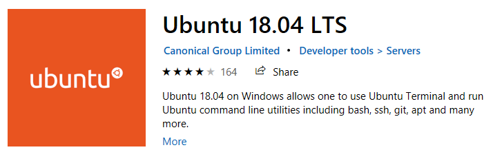

Ansible is an orchestration tool that can be used to configure cloud servers. This post is about what Ansible is, what Ansible is not, and demystify the vocabulary used to describe what Ansible does.
Ansible is an IT Orchestration Tool
Ansible is a tool to automate IT orchestration. What does IT orchestration mean?
Concerning a personal project: Automating a JupyerHub Deployment- Ansible is a tool to automate setting up the cloud server that runs JupyerHub. So my IT orchestration is setting up JupyerHub to run on a cloud server with all my custom configuration and settings. JupyterHub can be set up by typing all of the commands into an SSH shell and copying over files with FTP. But if JupyterHub gets deployed each quarter, and these commands are the same each quarter, then why not automate the process?
Ansible is a run-time that executes automation tasks
Ansible is a program that runs on a desktop, laptop, or cloud server that executes automation tasks. The Ansible run-time executes the actions specified by a set of user-defined rules.
Ansible is a language used to automate IT tasks
The steps Ansible goes through to create, configure and customize cloud servers are specified by valid Ansible syntax. The files a user creates and runs using Ansible must conform to this syntax or they will not be executed.
What does Ansible run on?
Ansible runs on MacOS, Ubuntu or other Linux distros. Ansible can be run on a local desktop or laptop and also run on a cloud server. It's my understanding that Ansible does not have to be installed on the cloud server that Ansible is configuring. In my case, that means that Ansible does not run on the JupyterHub server. Ansible runs on a laptop, desktop, or cloud server that configures the JupyterHub server.
Ansible does not run on Windows. I tried to install Ansible using both pip and conda on a Windows 10 machine. The result was unsuccessful.
(ansible) C:\Users\student\staticsite>pip install ansible
(ansible) C:\Users\student\staticsite>ansible --version
Traceback (most recent call last):
File "C:\Users\student\AppData\Local\conda\conda\envs\ansible\Scripts\ansible-script.py", line 44, in <module>
from ansible.utils.display import Display
File "C:\Users\student\AppData\Local\conda\conda\envs\ansible\lib\site-packages\ansible\utils\display.py", line 21, in <module>
import fcntl
ImportError: No module named fcntl

However, I did get Ansible to successfully install on WSL (Windows Subsystem for Linux). The installation proceeded error-free using the following commands.
sudo apt-get update
$ sudo apt update
$ sudo apt install software-properties-common
$ sudo apt-add-repository --yes --update ppa:ansible/ansible
$ sudo apt install ansible
After Ansible was installed on WSL, the --version attribute returned the output below:
peter@DESKTOP-TJDVNOC:~$ ansible --version
ansible 2.5.1
config file = /etc/ansible/ansible.cfg
configured module search path = [u'/home/peter/.ansible/plugins/modules', u'/usr/share/ansible/plugins/modules']
ansible python module location = /usr/lib/python2.7/dist-packages/ansible
executable location = /usr/bin/ansible
python version = 2.7.15+ (default, Oct 7 2019, 17:39:04) [GCC 7.4.0]
Ansible Vocabulary
There are a number of words that mean specific things when applied to Ansible. These words include:
- control node
- managed node
- playbook
- play
- module
- task
- handler
- inventory
Control node
A control node is a computer with Ansible installed on it that runs Ansible playbooks and orchestrates cloud servers. In my case, the control node is a laptop or desktop running Windows10 and Windows Subsystem for Linux or a cloud server that sets up a separate JupyterHub cloud server. The control node needs to have Ansible installed on it and it must have access to the internet.
Managed node
A managed node, or host, is a cloud server that is created, configured, and customized by a control node and a set of pre-defined rules. In my case, the managed node is the cloud server running JupyterHub. In the past, I have run Digital Ocean Cloud servers, so that's probably what I'll use working with Ansible.
Playbooks
An Ansible playbook is a yaml file that contains human and machine-readable commands to run IT orchestration tasks. Playbooks are saved and run on control nodes. Playbooks are kind of like .py files that run Python code. They are usually more than 5 lines long and less than 200 lines long. A long playbook can be broken up into several smaller playbooks.
Play
A play is a run of an Ansible playbook or a run of part of a playbook. Running a play is sort of like executing a .py file. Usually, Ansible plays end up changing the state of a cloud server.
Tasks
Tasks are groups of commands in a playbook. A playbook can contain one or many tasks. Tasks in a play run sequentially. Tasks are a way to break up a playbook into smaller chunks.
Modules
Tasks contain modules. A module is one command or function the performs one specific action. Ansible modules are comparable to Python functions. Ansible modules can accept extra arguments like some Python functions. There are Ansible modules for installing software, copying files, creating users, starting services, creating files and directories, setting permissions, and a whole host of other tasks.
Handlers
Handlers are triggered by tasks and are run once at the end of a playbook. A completed play can have one handler or many handlers.
Playbook
- Play1
- Task1
- Module1
- Module2
-
→ Handler
-
Play2
- Task1
- Module1
- Task2
- Module1
- Module1
- → Handler
Inventory
An inventory is a list of servers (a list of managed nodes) that Ansible is going to set up and configure. The inventory can contain one server or many servers. In my case, the inventory just contains one server, the Digital Ocean cloud server running JupyterHub.
Summary of Ansible Vocabulary
How about a couple of sentences to bring all these words together:
Ansible runs playbooks on a control node that configures managed nodes in your inventory. Playbooks are made up of tasks. Tasks contain modules. Modules complete one specific function on a managed node like install a package or copy a file.
Summary
In this post, we reviewed what Ansible is: a software package used to set up, configure, and manage cloud servers. We reviewed some Ansible-specific vocabulary like control nodes, managed nodes, playbooks, tasks, and modules.
Support
Do you find value in blog posts like this? Click the button below to Buy me a Coffee and support the work I do.